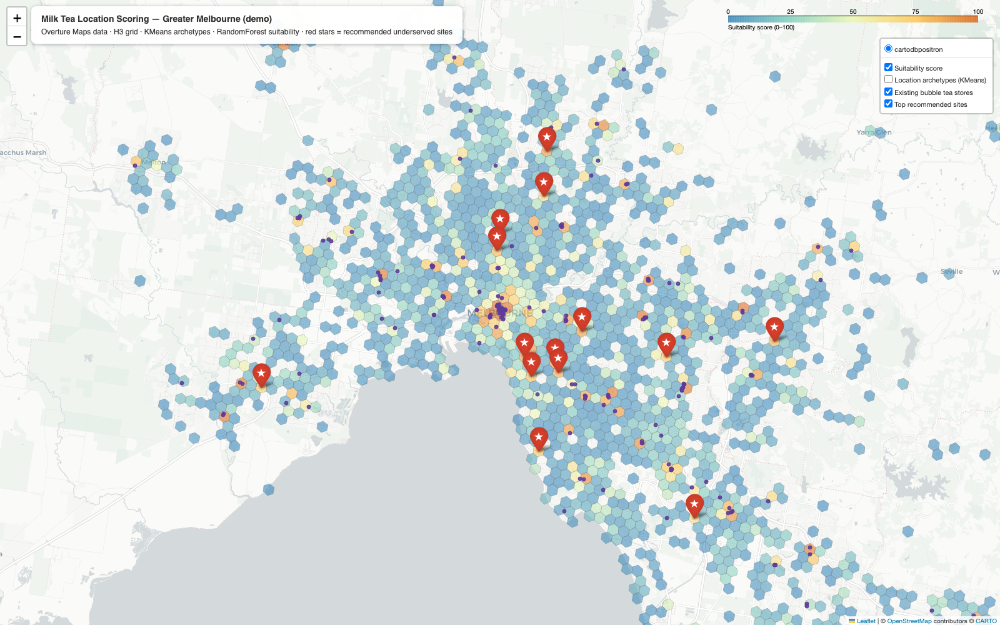
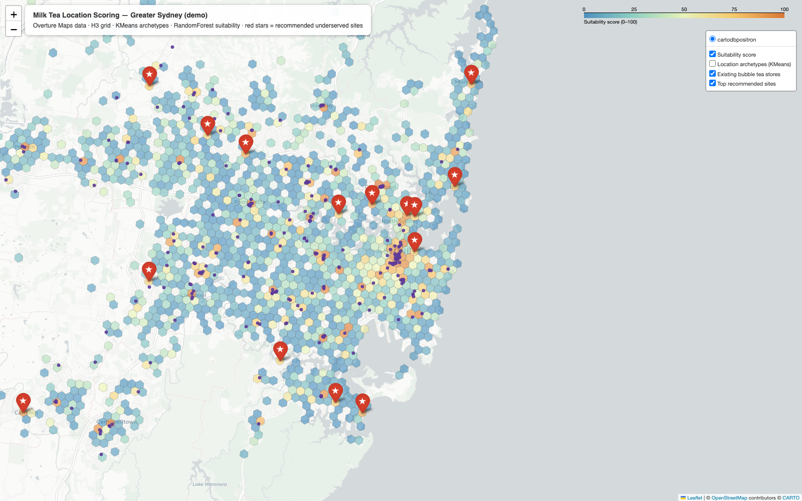

🧋 Milk Tea Location Scoring Engine
Working demo: commercial-potential scoring for milk tea store expansion, built on free public data (Overture Maps), an H3 hex grid, KMeans location archetypes and a RandomForest suitability model.

Greater Melbourne
1,512 scored cells · 208 existing stores as training labels · ROC-AUC 0.88

Greater Sydney
1,318 scored cells · 288 existing stores as training labels · ROC-AUC 0.87
How it works
- Data — ~31k points of interest per city pulled from the Overture Maps public S3 bucket with DuckDB (no API keys): existing bubble tea stores, cafés, Asian dining, retail anchors, stations, universities and more.
- Geospatial features — aggregated onto an H3 hexagonal grid (~0.74 km² cells) with walkable-catchment counts and CBD distance.
- KMeans — clusters every cell into interpretable archetypes (CBD core, high-street strip, neighbourhood centre…).
- RandomForest — learns what separates locations that already sustain a bubble tea store from those that don't; every cell is scored out-of-fold, so scores are honest.
- Opportunity ranking — suitability discounted by existing nearby supply surfaces underserved whitespace (red stars on the maps).